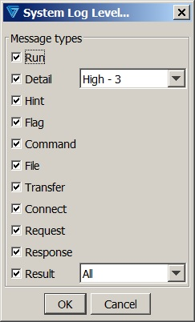

| Monitoring | |
In the web UI, go to in the menu bar. In the native UI, go to .
Standard values pertain only to detail messages; customizing allows finer control of the level:
Indicates whether a system log file should be:
Indicates whether a CRC-32 value should be computed on file transfers. If computed, a CRC value is recorded in the <Result> element of the system log file; and further, if database transfer logging is enabled, the CRC will be stored in the database as well.
Note: If special EOL processing is associated with the transfer (e.g., 'Fixed Record Outgoing Insert EOL' is on), CRC computations will take place after EOL processing on outbound payloads and before EOL processing on inbound payloads.
This is a VLTrader and Harmony option.
When the ‘Log errors’ selection is enabled, indicates that all errors and exceptions will be logged in either the Windows Event Log or the Unix Syslog. In Unix, messages larger than the size of the Syslog record entry will be truncated.
Additionally, logging of warnings may be selected but requires that error logging has also been enabled.
When enabled, System Event logging will be done in addition to “Email On Fail”. Suppression of repetitive messages used for emailing does not apply to System Event logging.
On newer versions of Linux and Unix Solaris 2.6+, it’s possible that the remote Syslog capability was disabled and may require additional configuration. Refer to Knowledgebase # 2416 for further information.
This is a VLTrader and Harmony option.
Indicates what level of messages should be logged to the system log file.
Standard values pertain only to detail messages; customizing allows finer control of the level:
